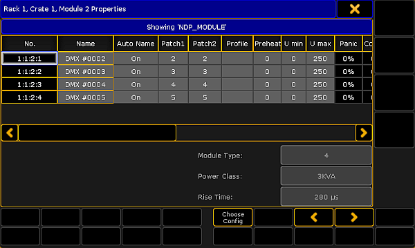
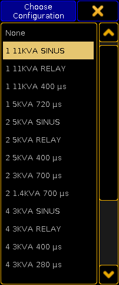

For more information on how to open the MA Dimmer Network see Network dimmer.
To edit a module, navigate down to the modules in the hierarchy of the dimmer network.
For more information on how to navigate down in the hierarchy see Network dimmer.
Press Edit and tap a module.
-The pop-up Module Properties opens.

Edit a module
To select a type of configuration, tap Choose Config and the pop-up Choose Configuration opens.

Select configuration
-Tap to choose a type.
-The configuration is now applied and can be edited.
Hint:
You can edit columns in the pop-up Module Properties. For more information on the single columns see Views – Dimmer View.
To edit the columns, tap and hold or press Edit and tap a cell of the corresponding column. Or select the cell and press the screen encoder.
-Depending on which column is being edited, either the calculator opens, On is displayed, or the cell is empty.
To select the next or the previous module, tap or .